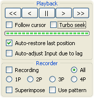

Полуавтоматический ТАСинг

Этот метод является дальнейшим развитием идей нелинейного метода ТАСинга.
Во многих случаях ТАСеру требуется сразу видеть результат своих изменений Ввода. В идеале он должен осознавать последствия своего решения одновременно с принятием решения. Но в реальности драгоценные мгновенья уходят на введение своего решения в компьютер и последующую навигацию Курсором Проигрывателя от кадра изменения Ввода до кадра конца участка.
Третий метод ТАСинга позволяет переложить навигацию Курсором Проигрывателя на Тасэдитор и сосредоточить внимание только на редактировании. Тасэдитор будет мгновенно реагировать на каждое изменение Ввода и сразу отображать его результат на экране FCEUX. Благодаря тому, что вы ощущаете воздействие каждого щелчка на игровой процесс, достигается высочайший уровень взаимосвязи между ТАСером и игрой. При таком тесном взаимодействии не только ТАСер управляет игрой, но и игра направляет действия ТАСера в нужное русло.
На практике такой высокий уровень взаимозависимости между ТАСером и игрой требуется далеко не всегда. Ведь это суживает спектр мыслей ТАСера, не позволяя взглянуть на игру свысока и применить к ней логику из других игр или других сфер жизни. Однако, когда текущий участок небольшой, и все факторы оптимальности известны (требуется только найти их идеальное сочетание), можно отвлечься от всего остального и полностью сфокусироваться на переборе вариантов.
Этот метод ТАСинга назван полуавтоматическим, потому что получилось нечто среднее между использованием автоматических ботов и ручным ТАСингом. Само по себе использование ботов не обладает высокой степенью гибкости, присущей человеческому мышлению. С другой стороны, ручной перебор (зацикленное тестирование множества однотипных вариантов Ввода) угнетает своей рутинностью.
Идея третьего метода ТАСинга в том, что вы редактируете Ввод, а Тасэдитор запускает и останавливает просмотр участка. Курсор Проигрывателя автоматически возвращается на то место, откуда его сбросило в момент усечения Гринзоны.
Режим Записи и галочка "Follow cursor" должны быть выключены. Галочка "Auto-restore last position" должна быть включена. Галочка "Turbo seek" по умолчанию отключена и включается при необходимости.
Основное занятие ТАСера:
Основное отличие этого метода от простого нелинейного в том, что при редактировании участка Курсор Проигрывателя находится в конце участка, а не где-то в начале. При каждом усечении Гринзоны Курсор Проигрывателя автоматически добегает к концу участка, точнее, к тому месту, где был конец участка до изменения Ввода. Если после изменения Ввода кадр конца участка изменился, достаточно слегка передвинуть голубой курсор колесом мыши на пару кадров выше или ниже. А во многих случаях даже это не требуется, так как ТАСеру не всегда нужно знать конечный кадр участка, порой надо только увидеть цепочку событий, происходящих на участке в результате изменённого Ввода.
Просмотр участка запускается после каждого промежуточного изменения Ввода, даже если вы ещё не закончили свою мысль и не собираетесь сравнивать итоговый результат с результатом предыдущего способа прохождения участка. Обычно во время увлечённого редактирования ТАСер не смотрит на экран FCEUX, продолжая щёлкать по Piano Roll, пока не воплотит свою мысль в виде большой кнопочной комбинации. А когда Ввод участка уже представляет интерес, ТАСер обращает внимание на экран эмулятора или Memory Watch, которые продолжают обновляться при каждом изменении Ввода на участке.
Например, чтобы осуществить прыжок через яму, вы сначала рисуете длинное зажатие R на участке и даже не смотрите на экран FCEUX, где в это время Марио на бегу проваливается в яму. Вы дорисовываете нажатие кнопки A, а затем уже смотрите на экран эмулятора и стираете/дорисовываете дополнительные нажатия A, перемещая начало и длительность прыжка и наблюдая траекторию прыгающего персонажа.
Таким образом, процесс шлифовки Ввода в данном методе представляет собой одновременный просмотр и редактирование участка. Так как ТАСер каждый раз мгновенно видит в эмуляторе результат своих действий, он почти сразу входит в тесный информационный контакт с игрой и начинает мыслить синхронно с её регулярными откликами. Игра начинает помогать ТАСеру принимать и отфильтровывать решения, начинает играть вместе с ним, а иногда даже за него. В результате можно потерять беспристрастность ума и пойти на поводу очевидных решений, поощряемых самой игрой. Поэтому не стоит использовать этот метод ТАСинга постоянно, рекомендуется чередовать его с предыдущим.
Как и в предыдущем методе, здесь можно менять скорость добегания, получая различные вариации метода:
Как и в третьей вариации нелинейного ТАСинга, здесь турбо создаёт психологическую ассоциацию между двумя отдалёнными событиями (началом и концом участка). Но теперь эта ассоциация многократно усиляется благодаря окончательному убиранию посредников – скоростной просмотр участка запускается ещё до отпускания кнопки мыши. Едва ТАСер щёлкает по какому-то кадру Piano Roll, он уже видит результат, который вообще-то наступает в игре через несколько секунд после нажатия кнопки.
В качестве примера можно привести поиск первого кадра для нажатия кнопки Start. Во многих играх нажать эту кнопку можно раньше, чем отобразится графика на экране. Кроме того, нередко после срабатывания Start игра на некоторое время задумывается, ничем не подавая вид, что нажатие сработало. Только через секунду или две мы видим смену заставки и тем самым узнаём, что нажатие Start сработало.
В традиционном методе на поиск самого первого кадра уйдёт 5-10 минут. В Тасэдиторе на это уходит менее минуты.
Делается это так:
Точно так же можно очень быстро находить оптимальную длительность зажатия кнопки A для изменения высоты прыжка и приземления в нужной точке. Можно легко манипулировать удачей во многих играх. И вообще, удобство автоматического турбо-добегания наглядно проявляется в ситуациях, когда на участке действует всего один фактор оптимальности, и требуется быстро перебрать пару сотен однотипных вариантов.
Полуавтоматический ТАСинг стимулирует меньше думать и больше экспериментировать. Во многих видеоиграх именно такой подход приводит к успеху, однако постарайтесь не увлечься комфортностью этого метода, забыв про остальные.
Плюсы полуавтоматического ТАСинга:
+ Постоянная отдача позволяет на ходу корректировать свои решения и заранее отсекать в уме заведомо ошибочные комбинации Ввода. Это уменьшает количество требуемых исправлений и ускоряет рабочий процесс.
+ Мгновенная навигация к месту редактирования.
+ Возможность пропускать ненужные сцены и ассоциировать действие с итогом.
Минусы метода:
– Упор на мышиное управление.
– Настойчивая отдача провоцирует ТАСера отсекать некоторые нелогичные, но потенциально выигрышные комбинации.
Когда использовать: когда нужно отшлифовать участок, для которого уже известны все факторы оптимальности.
Теперь вы изучили главные принципы работы в Тасэдиторе и уже можете начинать ТАСить свою любимую игру. Лучше всего обучает практика, и только в процессе реальной разработки своего личного ТАСа вы сможете освоить все премудрости.
После пары недель практического ТАСинга рекомендуется заново перечитать третью и четвёртую главу данного Курса, чтобы усвоить текст на более глубоком уровне, ведь во время первого чтения вы наверняка многое поняли не до конца.
В следующей главе: тонкая настройка программы.
ПРАКТИЧЕСКОЕ ЗАДАНИЕ: Хорошенько отшлифуйте Ввод в распланированных участках своего тестового мувика. Если пробное разбиение Маркерами оказалось неудачным – переразбивайте на ходу. Постарайтесь использовать только второй и третий методы ТАСинга, не прибегая к традиционному методу. Попробуйте также воспользоваться турбо в нужных местах. Если на оптимизацию целого игрового уровня вам не хватит терпения, постарайтесь хоть как-то завершить оставшийся промежуток уровня, даже если он будет не слишком оптимальным. Примерное время выполнения: 30-60 минут. |
Created with the Personal Edition of HelpNDoc: Produce Kindle eBooks easily